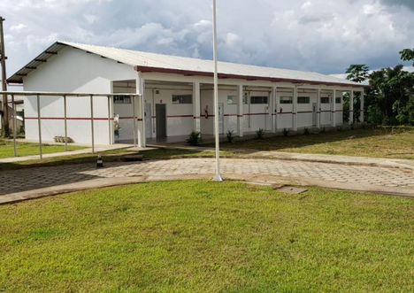
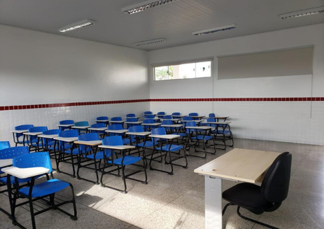
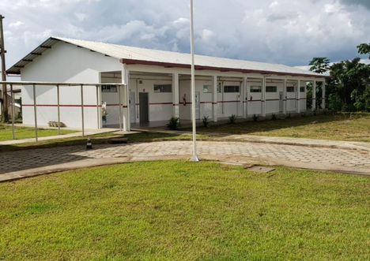
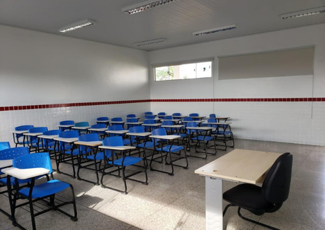

Sobre o Campus
O Instituto Federal do Acre (IFAC) Campus Sena Madureira é uma instituição de ensino que se destaca pelo compromisso com a educação de qualidade e pelo desenvolvimento da região. Nosso campus oferece três cursos técnicos integrados voltados para preparar jovens e adultos para o mercado de trabalho e para a continuidade dos estudos: Informática, Administração e Agropecuária. Cada um desses cursos é estruturado para proporcionar uma formação sólida, combinando teoria e prática, de forma a atender às demandas atuais da sociedade e do setor produtivo. Ao longo de sua história, o campus enfrentou diversos desafios e batalhas, mas graças ao esforço coletivo de professores, servidores e da comunidade, hoje contamos com uma infraestrutura moderna e ampla. Nosso campus dispõe de quadras poliesportivas, piscina, salas de aula climatizadas, bibliotecas completas e uma variedade de laboratórios especializados que possibilitam experiências práticas e aprofundamento técnico-científico. Entre os laboratórios, destacam-se: Maker, Química, Física, Nutrição, Biologia, Alimentos e dois modernos laboratórios de informática, que garantem aos estudantes acesso às mais recentes tecnologias e ferramentas digitais. Além da infraestrutura física, o IFAC Campus Sena Madureira conta com uma equipe altamente qualificada de professores e servidores, que atuam com dedicação para oferecer um ensino de excelência e apoiar o desenvolvimento acadêmico, pessoal e profissional de cada estudante. A presença de profissionais comprometidos e capacitados contribui para criar um ambiente educativo acolhedor, estimulante e inspirador, onde os alunos podem explorar seus talentos, inovar e se preparar para os desafios do futuro.
Galeria
 



Cursos Oferecidos
Matutino
Vespertino
Matutino